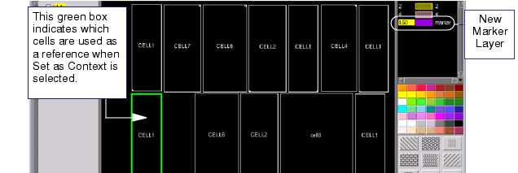
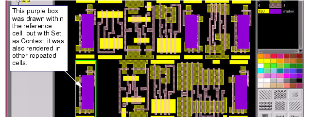

When you need
to pass in marker layers identifying key regions in reference cells,
a simpler process is to use this method to create areas in duplicate cells.
The changes you make actually update the original
cell and are inherited by all other references to the cell. You
can also see the neighbor cells as you create the marker regions
so you can better view how your changes interact with those cells.
This method preserves hierarchy and does not negatively affect the
hierarchy of the cells.
Prerequisites
Calibre
DESIGNrev is running in interactive GUI mode and a layout is open.
Calibre
DESIGNrev is set (using zoom and view depth) to view the cells for
which you are going to create the marker layer. The cell reference
you edit must have a magnification equal to 1, to ensure the modifications
translate to the original cell.
Make
sure the current cell contains the reference you want to use as
the context for editing.
Procedure
- Right-click in the Layers
Browser and select Add from the popup menu.
Assign a name and layer number not currently being used, as well
as a color and fill pattern. Make sure this layer is selected.
- Adjust the viewer depth until
the reference cell you want to select appears outlined. Depending
on the number of levels in the layout hierarchy, this may be 0 or
a higher number.
- Select the reference cell
or array of reference cells. Be sure the Ref select mode filter
is checked.
- Click the right mouse button
to display the popup menu and choose Set as Context.
The cell extent is highlighted in green (see Figure 1).
Figure 1. Setting a Cell as Context
- Increase the viewer depth
as needed to display contents of the selected cell inside the green
outline of the cell extent.
- Within the selected cell (and
with the new marker layer highlighted), render the areas for further
processing using the Box or Poly modes. As shown in Figure 2, all cells that are identical to CELL1
have the same highlighted areas as in the original reference cell.
Figure 2. Duplicating the Marker
Regions Using Cell References
- Clear the green box by selecting from
the menu.